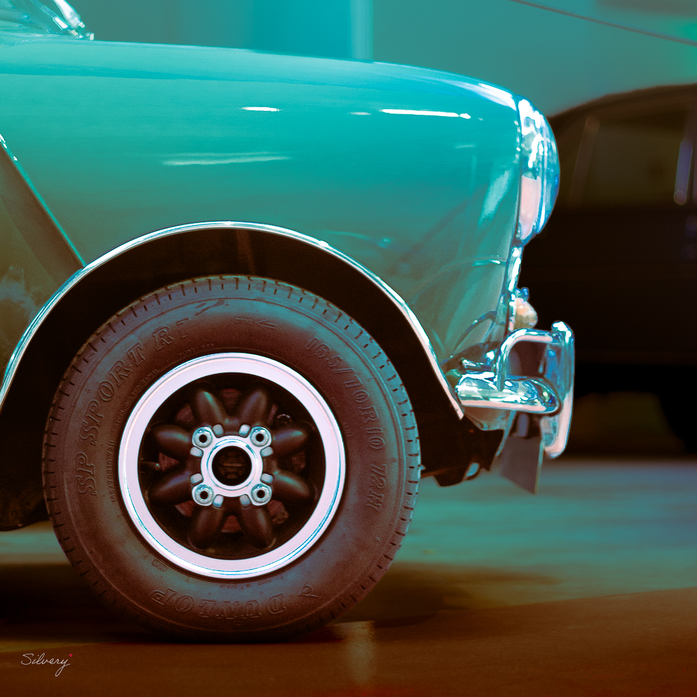
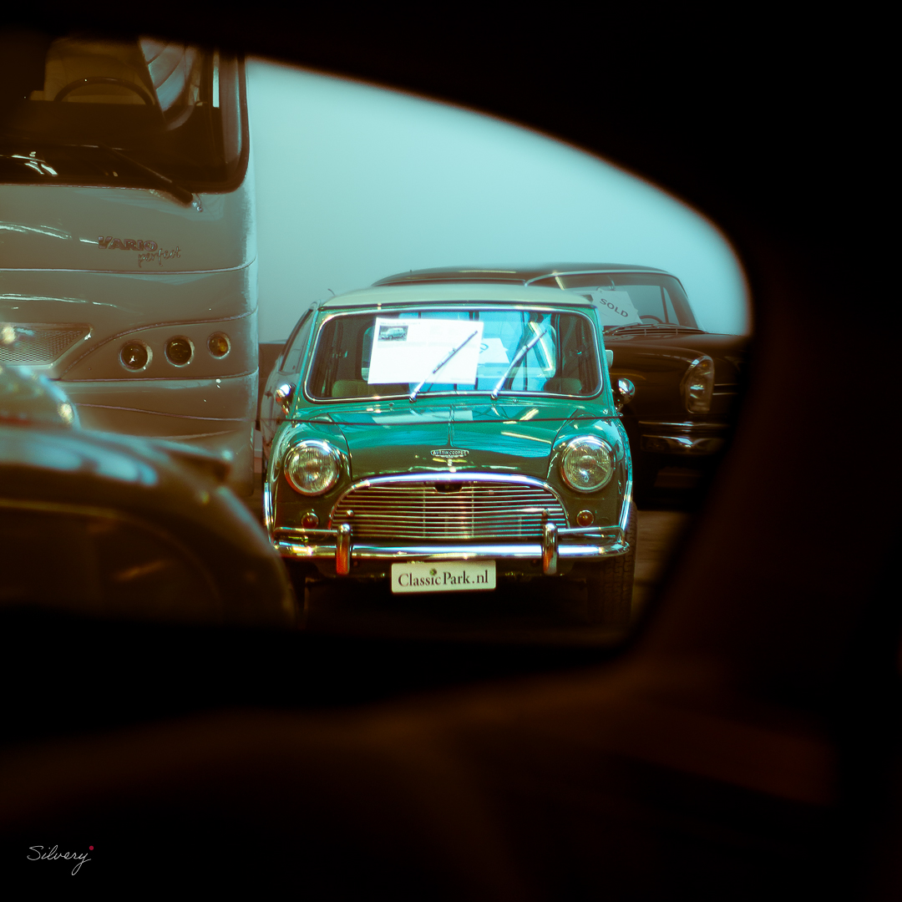
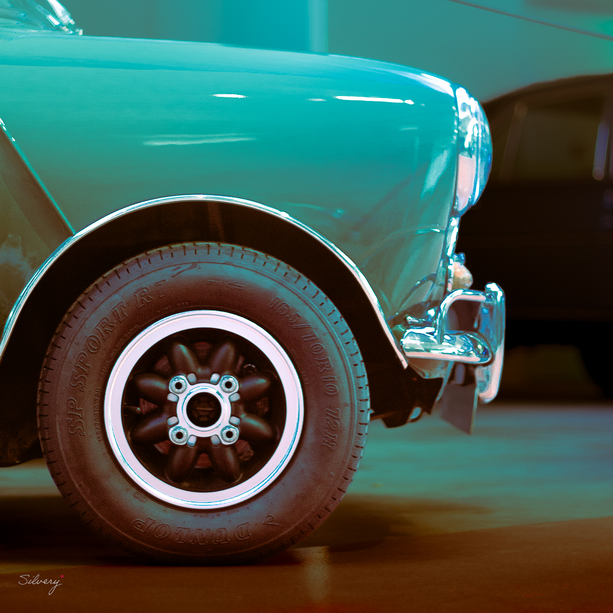
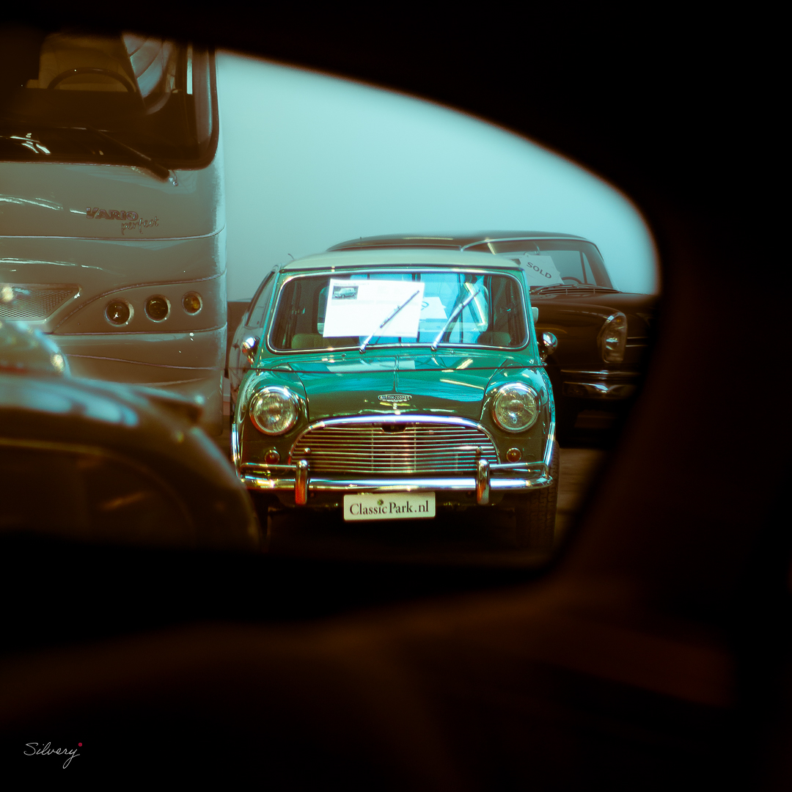

In het groene hart van Brabant, in het pittoreske Boxtel, ligt een bijzondere plek voor liefhebbers van klassieke en exclusieve auto's: Classic Park. Dit initiatief van de familie Van Dijke is meer dan alleen een automuseum, het is een ware passie die tot leven is gekomen. De familie heeft met veel zorg en toewijding een vervuild terrein omgetoverd tot een duurzaam paradijs, waar bezoekers kunnen genieten van de prachtige natuur en de indrukwekkende collectie auto's. Met het motto "Geniet van kwaliteit, het zit in onze natuur" nodigen Renald en Sander van Dijke iedereen uit om de bijzondere sfeer van Classic Park te komen ervaren.
 


